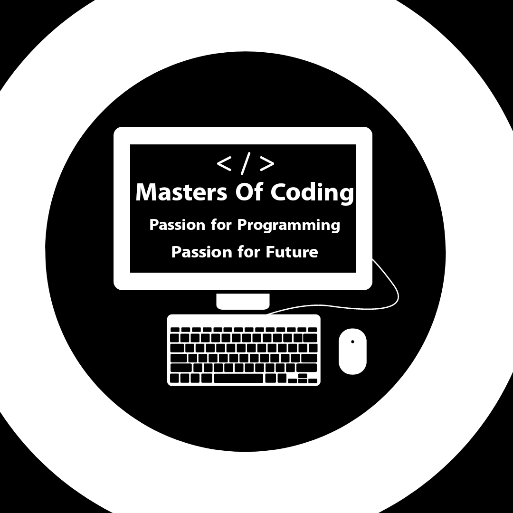

Masters of Coding
Created by Alin Ionut Toader
THIS IS THE BETA VERISON OF OUR WEBSITE ! THE FULL WEBSITE WILL BE RELEASED SOON.This page is made for everyone who wants to learn coding and wants to develop a fully competeive network that would help them achieve thier goals and become better at computer programming, because this is the future.
Coding refers to the process of writing instructions (code) in a computer programming language to create software programs, applications, and systems that can perform specific tasks on a computer or other digital devices. It involves translating the desired behavior and features of a software system into a set of instructions that a computer can understand and execute. Coding is a crucial step in the software development process and is performed by software developers, engineers, and programmers.
Objective
Coding is super important these days. I know it might sound intimidating, or maybe even boring, but hear me out. Think about how much of our lives are online now. We use the internet for everything, from shopping and socializing to work and education. And behind every website or app we use, there's a bunch of code that makes it all possible. If you know how to code, you have the power to create your own websites, apps, and tools that can solve problems or entertain people. You can also build skills that are highly in demand in today's job market. Companies are always looking for developers and programmers who can help them create and maintain their online presence. But even if you're not interested in a career in tech, learning to code can be valuable in many other ways. It can help you think logically and creatively, and it can improve your problem-solving skills. It can also give you a deeper understanding of how technology works, which is essential in our digital age. I know that learning to code can seem daunting, but it doesn't have to be. There are tons of resources available online, from free tutorials to online courses and coding bootcamps. You can start with something simple, like building a basic website, and work your way up from there. So don't be afraid to give coding a try. You might just find that it's a skill that will serve you well in many areas of your life. And who knows, maybe you'll even discover a passion for it that you never knew you had. Our 3 main goals are these:
Creating a network based on respect and hard work
Learning as many things as possible
Doing a lot of things that this community will be proud of